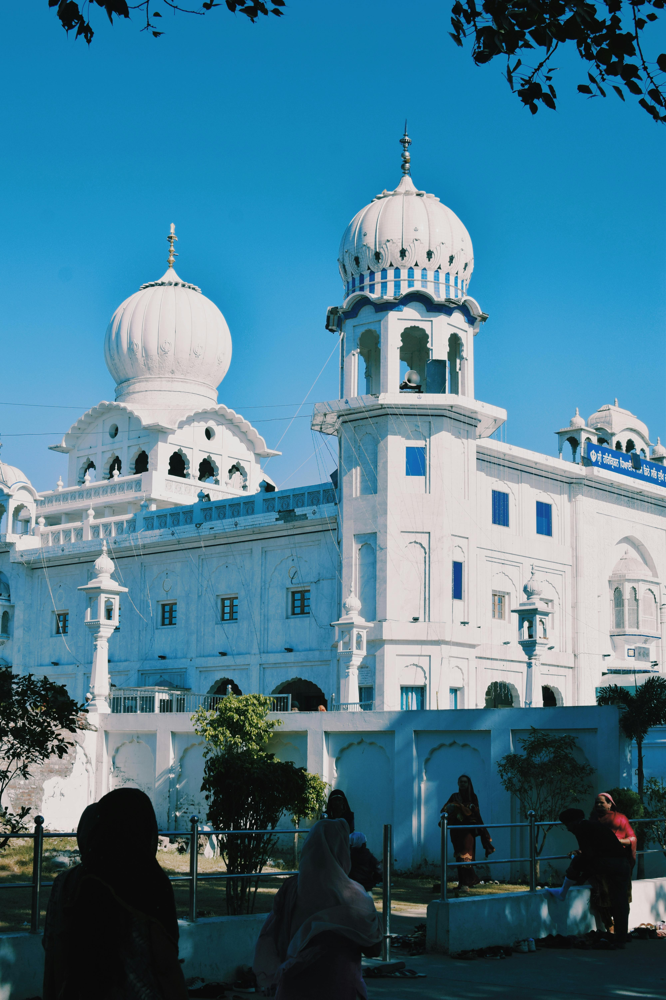

Punjab, a region rich in culture and history, is home to several temples that reflect the spiritual diversity of India. These temples are not only places of worship but also represent the state’s architectural splendor and ancient traditions“The City of creates a serene atmosphere”.
Another important temple is the Mata Chintpurni Temple, located in the Una district of Himachal Pradesh, near Punjab. Dedicated to the Goddess Chintpurni, this temple is part of the 51 Shakti Peethas. Devotees visit this temple seeking blessings for removal of all worries and obstacles. Its location on a hill provides a scenic view of the surrounding region, adding to the temple's spiritual ambiance.
The Devi Talab Mandir in Jalandhar is another famous temple in Punjab, dedicated to Goddess Durga. This temple attracts thousands of devotees, especially during the Navratri festival. The temple complex is well-maintained, and the main shrine houses the idol of Goddess Durga, along with other deities. The annual fair during Navratri sees numerous cultural performances, religious ceremonies, and a large influx of visitors who come to seek the blessings of the goddess.